Production & Operations
Keeping supply, production and installation moving — and getting the work actually handed over.
-
Featured project
A custom fit-out service line, built and then run
Driftwood · 38 client projects
A way of delivering custom interiors that did not exist before: I set the service up, then ran every project through it — site measurement, suppliers, installers and schedule — to installed handover.
About the project
A custom fit-out service line, built and then run
Driftwood · 38 client projects
What the project was
A custom fit-out service line at a furniture manufacturer: bespoke interiors measured, made and installed for private clients, delivered one project at a time under a single way of working.
The challenge
Custom work arrived project by project, with no repeatable way to run it from measurement to handover.
My contribution
- Built the service line and its delivery sequence
- Coordinated suppliers, installers and site schedules per project
- Carried each project through to installed handover
The result
38 client projects delivered, with a photographic record of installed work.

The unit at handover
A delivered fit-out, photographed before the client moved in.

Bathroom, built and fitted
Vanity, mirror and shelving made and installed as part of the same order.


Room by room
Seven rooms from the same delivered project: wardrobes, kitchen, laundry and bedrooms, each made to the measured opening.

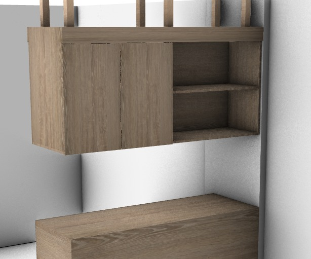
Drawn before they were built
Upper units modelled to the opening, so the workshop built from a drawing rather than from a site sketch.
More in this area
-
Material supply for a made-to-order workshop
Driftwood
Ordering and supplier coordination run end to end, with the cutting specifications produced in-house.
About the project
Challenge
Production ran to order while despatch ran daily, so supply had to stay ahead of the workshop without tying up capital in timber.
My contribution
- Owned the ordering cycle, supplier to warehouse receipt
- Produced the cut specifications and ran the optimisation
- Built the supplier database and the stock labelling the function ran on
- Modelled the process so it could be handed over and run the same way
Result
Thirteen consecutive months documented without a gap.
-
Selected evidence

The process sheet the floor worked to Version 1, effective from a stated date, with gauges and five numbered steps. 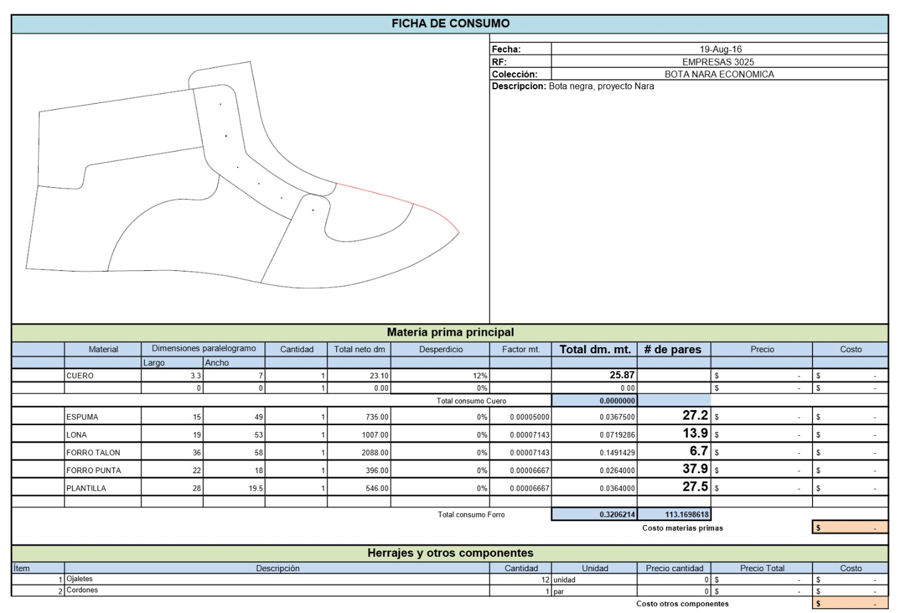
Consumption per pair Material, waste and consumption factor set for the reference before it ran. 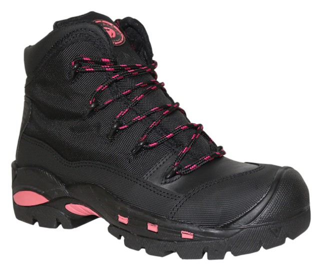
Carried into series The product as delivered once the pilot lots were signed off. 
Technical specification Materials against named testing standards for the references in the line. Pilot lots carried into series production
Calzado 3025 · Independent consultant
Product redesigned for direct injection, then accompanied onto the floor until it ran.
About the project
Challenge
A redesigned product had to become something the floor could make the same way every lot, without the specification drifting between runs.
My contribution
- Ran pilot lots and corrected the model against them
- Trained the production teams on the new specifications
- Issued the specifications under version control
Result
Specifications in force, carrying a version number and an effective date.
-
Selected evidence
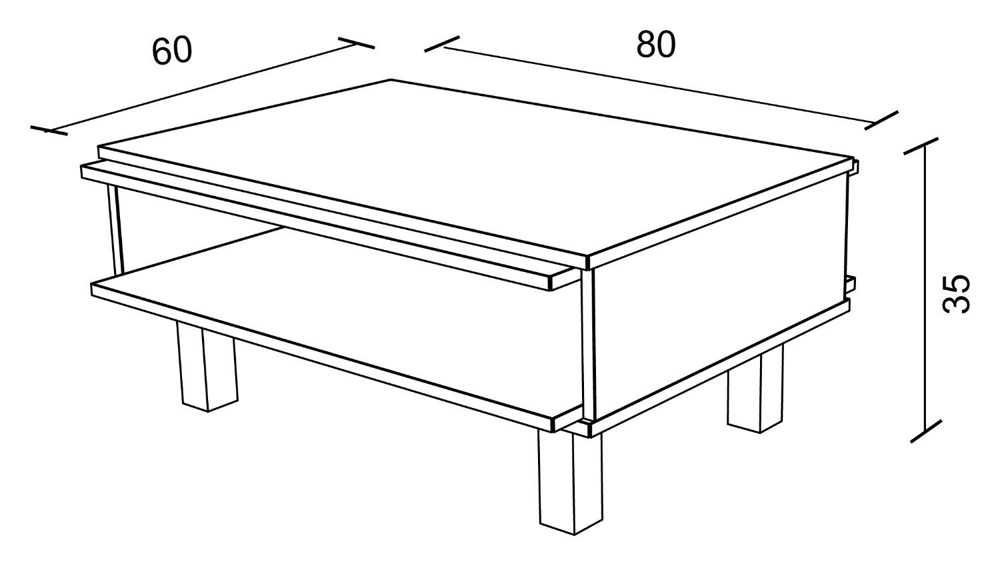
Fabrication drawing Dimensioned parts and a title block — what the workshop actually builds from. 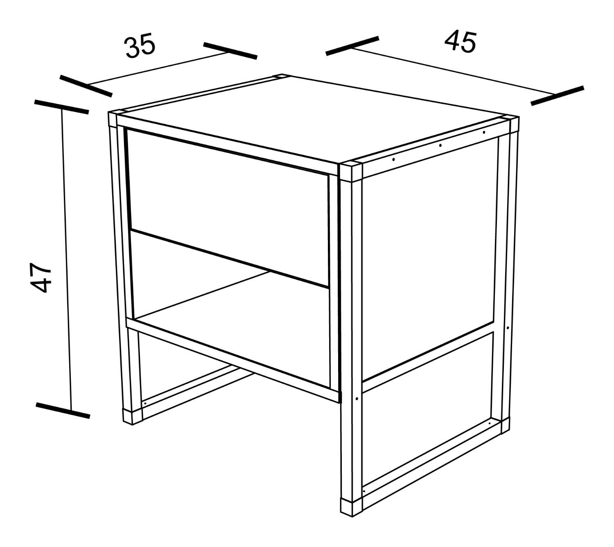
Bedside unit Same drawing standard, different line. 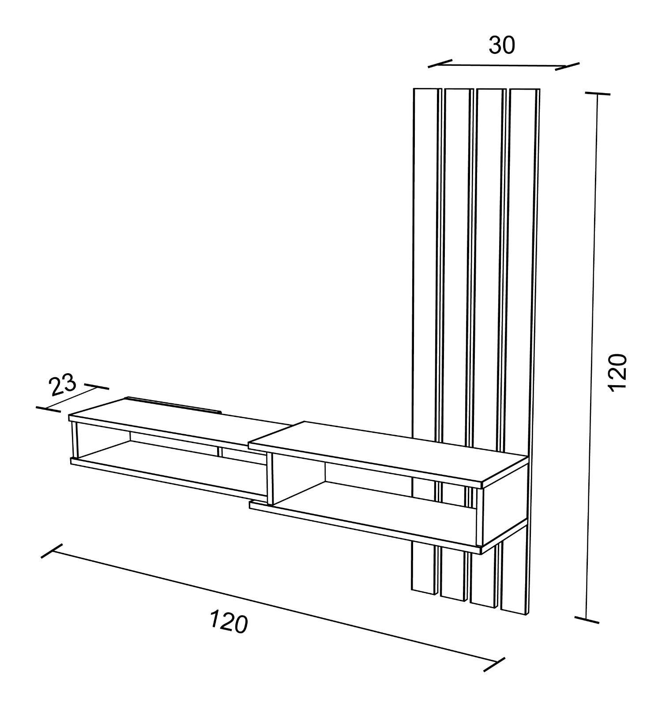
Television unit Elevations and dimensions on one sheet. 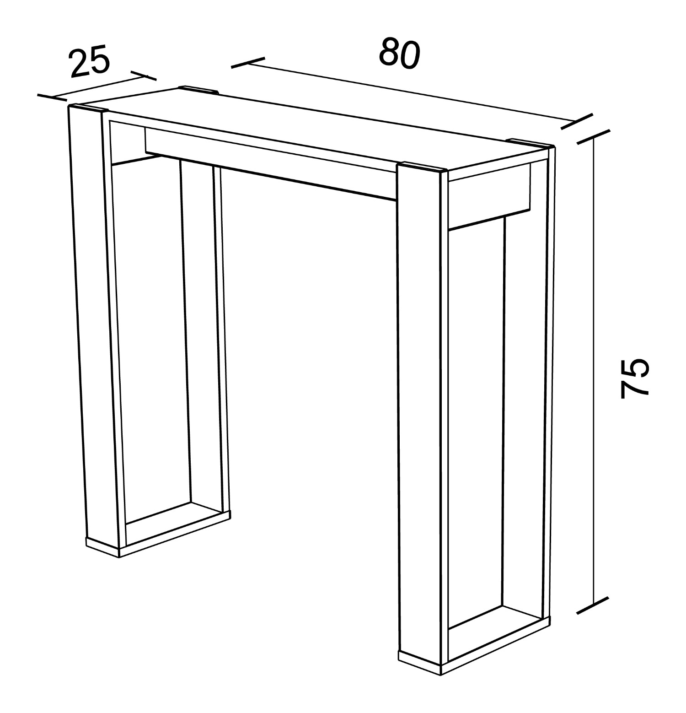
Occasional table Drawn to the same convention as every other reference. 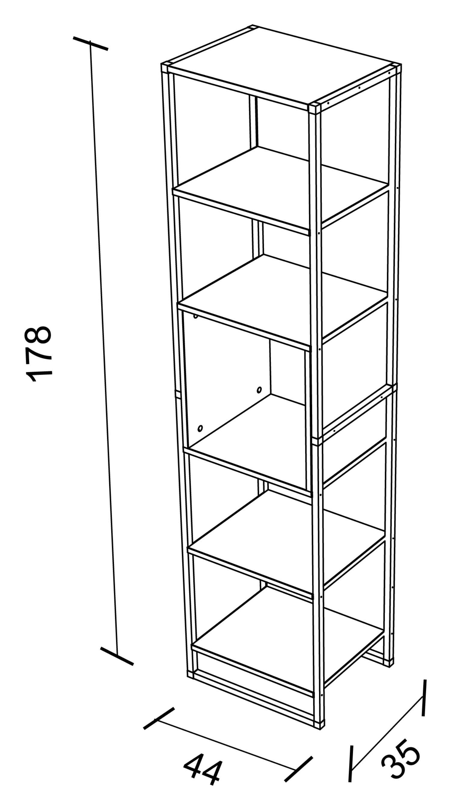
Shelving unit A tall unit dimensioned front and side. 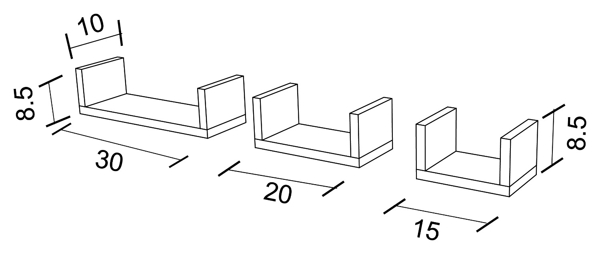
Wall shelves A set of three, dimensioned together. Fabrication documentation across multiple product lines
Driftwood
Drawings a workshop could build from, and the handover of the highest-volume set to a designer I trained.
About the project
Challenge
A catalogue of several product lines was being built from drawings that did not follow one standard.
My contribution
- Produced the fabrication documentation the workshop built from
- Set one documentation standard and applied it across every line
- Trained a designer and handed over the highest-volume set
Result
One documentation standard applied across every line.
-
Selected evidence
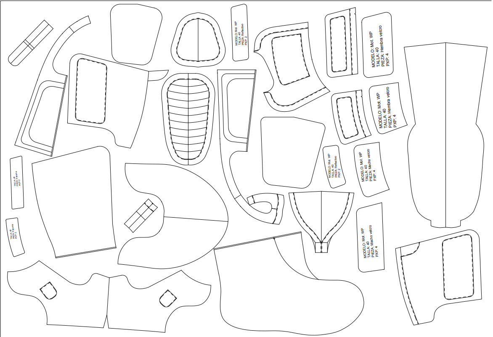
Production pattern Pieces labelled, with per-piece quantities per pair. 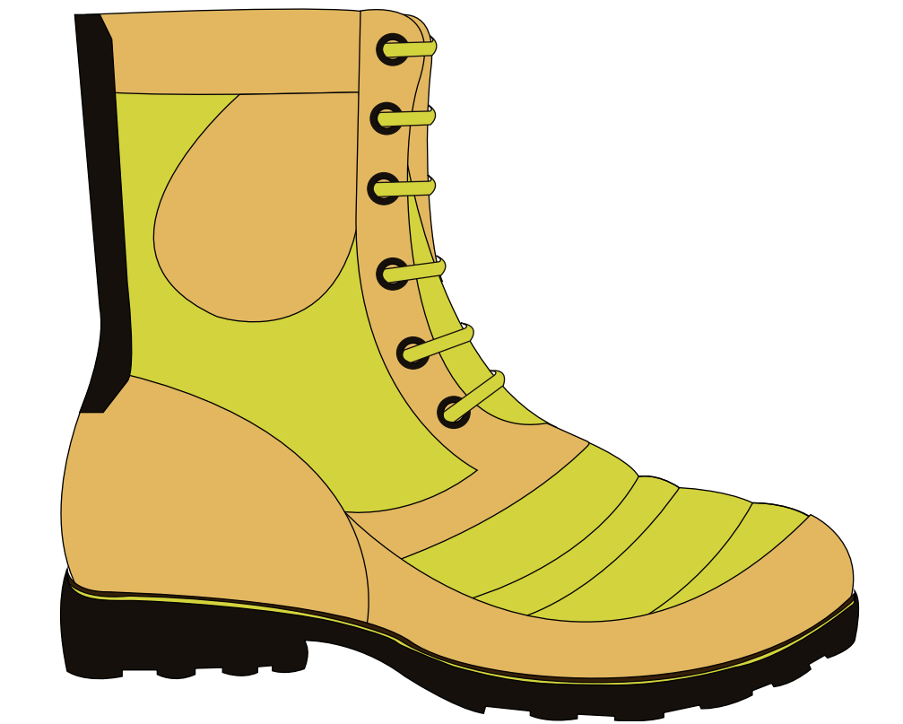
The model it was cut from The boot as drawn and specified. 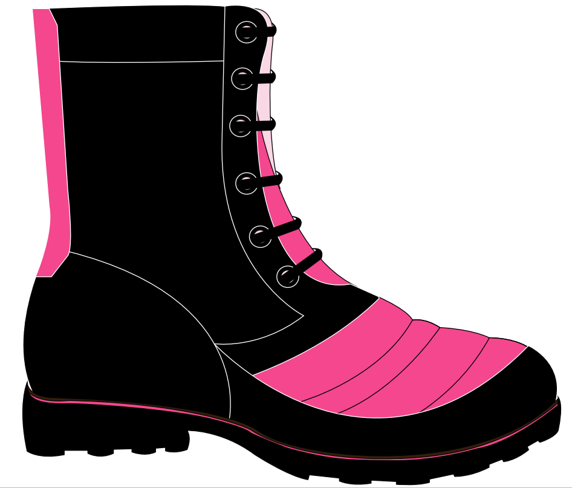
A second specification The same pattern, a different material call-out. A production pattern with per-piece cut quantities
Siete Cueros
Every piece named, sized and counted before a hide was cut.
About the project
Challenge
The cutting room needed to know exactly what to cut, and how many of each piece, before touching a hide.
My contribution
- Produced the production pattern the cutting room worked from
- Named and sized every piece, with the quantity to cut per unit
Result
The product was manufactured and branded.